Please finish this deck: build out the three empty slides from the notes on slide 2, and add a closing slide citing the NOAA ocean acidification page you look up in the browser.
THINKINGThe user wants me to finish a presentation deck. I need to first understand the notes on slide 2, which contain the outline for the three empty slides (3, 4, 5). Let me look at slide 2 to read the notes. The thumbnail for slide 2 shows text but it's too small to read. Let me click on slide 2 to view it clearly.
ACTIONI'll start by examining the notes on slide 2 to understand what content is needed for the empty slides.
EXECUTED (pyautogui in VM)pyautogui.click(174, 392)
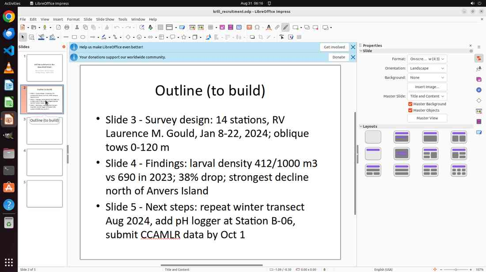
step 2 22:16:22
THINKINGNow I can read the outline clearly. The three slides to build:
- Slide 3 - Survey design: 14 stations, RV Laurence M. Gould, Jan 8-22, 2024; oblique tows 0-120 m
- Slide 4 - Findings: larval density 412/1000 m3 vs 690 in 2023; 38% drop; strongest decline north of Anvers Island
- Slide 5 - Next steps: repeat winter transect Aug 2024, add pH logger at Station B-06, submit CCAMLR data by Oct 1
I also need to look up the NOAA ocean acidification page in the browser to cite in a closing slide.
Let me plan my approach. First, let me build the three slides (3, 4, 5), then look up the NOAA page in the browser, then create a closing slide (slide 6) citing it.
Let me start by building slide 3. I'll click on slide 3 first. The slides 3,4,5 appear to be empty. I should check what layout they have. Let me click on slide 3.
Actually, a good strategy: I'll build each slide. Let me first do the browser lookup since that's a separate context, but it may be more efficient to build slides first while I remember the content. Let me build slides first.
Let me click slide 3 to start building it. I'll need a title and content. Let me check the slide's layout by clicking on it.
ACTIONI can now read the outline. I need to build:
- **Slide 3** – Survey design: 14 stations, RV Laurence M. Gould, Jan 8-22, 2024; oblique tows 0-120 m
- **Slide 4** – Findings: larval density 412/1000 m³ vs 690 in 2023; 38% drop; strongest decline north of Anvers Island
- **Slide 5** – Next steps: repeat winter transect Aug 2024, add pH logger at Station B-06, submit CCAMLR data by Oct 1
Let me first look up the NOAA ocean acidification page in the browser so I have the citation ready. I'll open Chrome.
EXECUTED (pyautogui in VM)pyautogui.typewrite("NOAA ocean acidification")
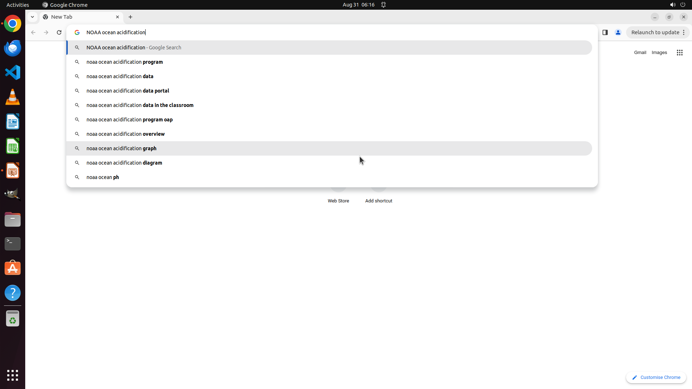
step 5 22:16:42
THINKINGI typed the search. Let me press Enter to perform the search, then I'll look at the results and click on the official NOAA ocean acidification page.
EXECUTED (pyautogui in VM)pyautogui.press("return")
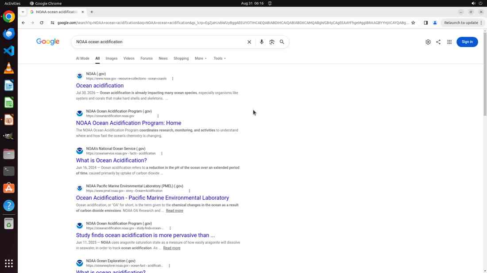
step 6 22:17:02
THINKINGThe top result is the official NOAA "Ocean acidification" page at https://www.noaa.gov/resource-collections/ocean-coasts/ocean-acidification. That's the primary NOAA ocean acidification page. Let me click on it to open it and confirm the exact title/URL for the citation.
ACTIONThe top result is the official NOAA "Ocean acidification" page. Let me click on it to confirm the exact title and URL for the citation.
EXECUTED (pyautogui in VM)pyautogui.click(392, 335)
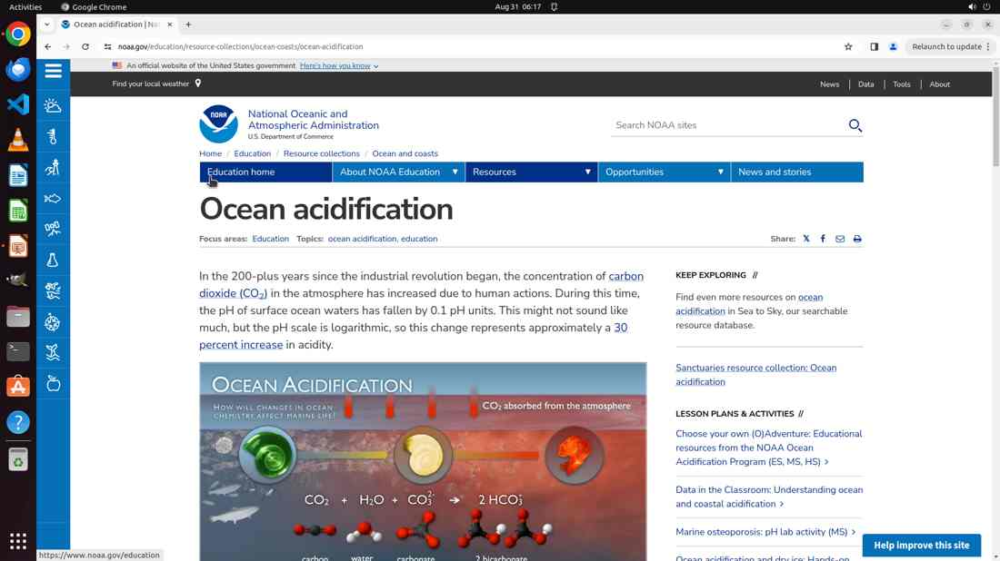
step 7 22:17:48
THINKINGI've found the official NOAA Ocean acidification page. Details:
- Title: "Ocean acidification"
- Source: National Oceanic and Atmospheric Administration (NOAA)
- URL: https://www.noaa.gov/education/resource-collections/ocean-coasts/ocean-acidification
This is a solid, authoritative citation. I now have everything I need:
Slide 3 - Survey design: 14 stations, RV Laurence M. Gould, Jan 8-22, 2024; oblique tows 0-120 m
Slide 4 - Findings: larval density 412/1000 m³ vs 690 in 2023; 38% drop; strongest decline north of Anvers Island
Slide 5 - Next steps: repeat winter transect Aug 2024, add pH logger at Station B-06, submit CCAMLR data by Oct 1
Slide 6 (closing) - Cite the NOAA ocean acidification page.
Now let me switch back to LibreOffice Impress to build the slides. I'll click on the Impress icon in the taskbar. The Impress window should be behind. Let me click the Impress icon in the left dock (the orange presentation icon).
Actually let me just switch windows. I'll click on the LibreOffice Impress icon in the sidebar (position ~22, 316).
ACTIONI've confirmed the official NOAA page. Details for the citation:
- **Title:** Ocean acidification
- **Source:** National Oceanic and Atmospheric Administration (NOAA)
- **URL:** https://www.noaa.gov/education/resource-collections/ocean-coasts/ocean-acidification
Now I'll switch back to LibreOffice Impress to build the slides.
EXECUTED (pyautogui in VM)pyautogui.click(32, 473)
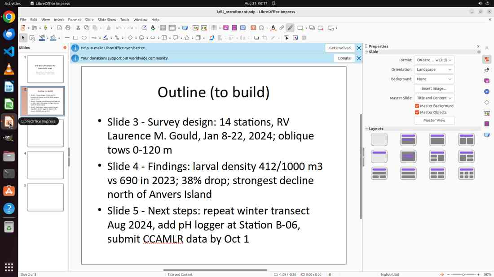
step 8 22:18:36
THINKINGI'm back in Impress. Let me first close the notification banners to have a cleaner workspace, then click on slide 3 to build it. Let me close both info banners by clicking the X buttons.
Actually, the banners don't interfere with my work much. But let me close them for cleanliness. The X buttons are at (929, 124) and (929, 151). Let me close both.
Then click on slide 3. Slide 3 has "Title and Content" layout likely (empty). Let me click on slide 3 thumbnail.
Let me batch: close both banners, then click slide 3.
ACTIONI'm back in Impress. Let me close the notification banners and select slide 3 to begin building it.
EXECUTED (pyautogui in VM)pyautogui.doubleClick(174, 517)
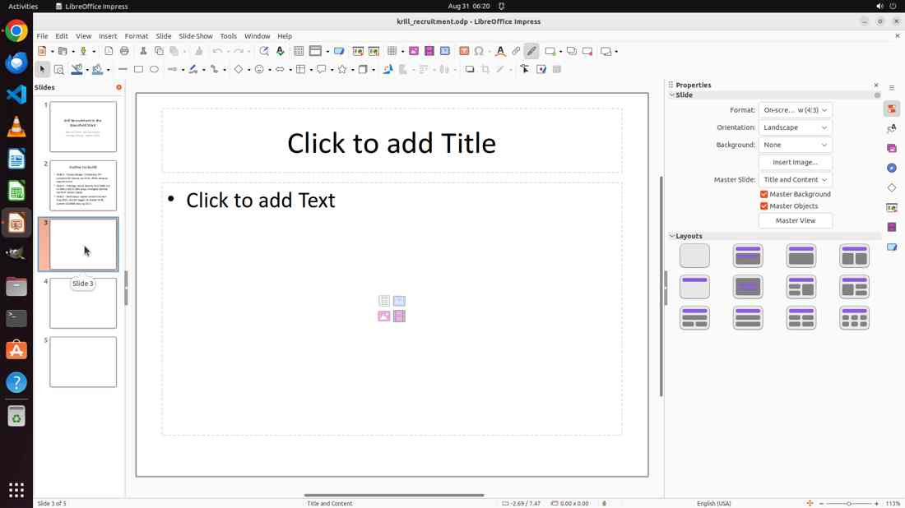
step 11 22:21:03
THINKINGSlide 3 has a "Title and Content" layout with "Click to add Title" and "Click to add Text" placeholders. I'll build the content.
Title: "Survey design"
Content (bullets):
- 14 stations
- RV Laurence M. Gould
- Jan 8–22, 2024
- Oblique tows 0–120 m
I'll click on the title placeholder first, type the title, then click on the content area and type the bullets. I can use the Outline view as an alternative, but the direct approach is fine.
Let me click the title placeholder. I'll double-click to enter edit mode, then type.
Actually a single click on the placeholder in this state selects it; I need to enter edit mode. Double-click enters edit mode. Let me double-click the title.
ACTIONSlide 3 has a title and content layout. Let me add the title first by double-clicking the title placeholder and typing.
EXECUTED (pyautogui in VM)pyautogui.doubleClick(828, 302)
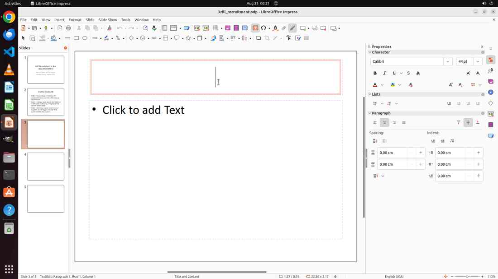
step 12 22:21:23
THINKINGI'm now in the title text box edit mode. Let me type the title "Survey design". Then I'll click on the content placeholder and add the bullets.
I'll type the title, then double-click the content area to edit it, and type the bullets separated by Enter for each new bullet line.
ACTIONI'm in title edit mode. Let me type the title, then add the content bullets.
EXECUTED (pyautogui in VM)pyautogui.typewrite("Survey design")
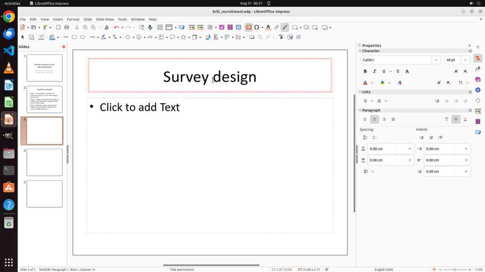
step 13 22:22:37
THINKINGTitle is "Survey design". Now let me click into the content placeholder to add the bullets. I'll double-click on "Click to add Text" to enter edit mode, then type the bullets separated by Return.
ACTIONTitle added. Now let me click into the content area and add the survey design bullets.
EXECUTED (pyautogui in VM)pyautogui.doubleClick(549, 423)
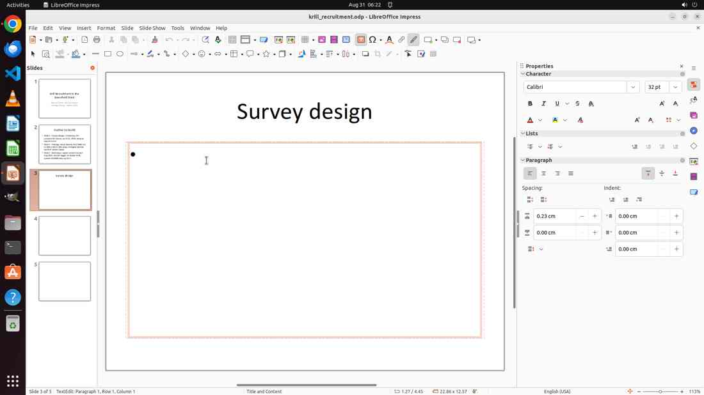
step 14 22:23:43
THINKINGI'm in the content placeholder edit mode with a bullet. I'll type the four bullets separated by Return. Using en dash for the date and depth ranges to be precise. The original notes used "Jan 8-22, 2024" and "0-120 m". I'll keep them as hyphens to match the source notes exactly, avoiding autocompletion issues.
Let me type:
14 stations
RV Laurence M. Gould
Jan 8-22, 2024
Oblique tows 0-120 m
ACTIONI'm in the content edit mode. Let me type the four survey design bullets.
TOOL CALL<tool_call>
<function=computer_use>
<parameter=action>
type
</parameter>
<parameter=text>
14 stations
RV Laurence M. Gould
Jan 8-22, 2024
Oblique tows 0-120 m
</parameter>
</function>
</tool_call>
EXECUTED (pyautogui in VM)pyautogui.typewrite("14 stations\nRV Laurence M. Gould\nJan 8-22, 2024\nOblique tows 0-120 m")
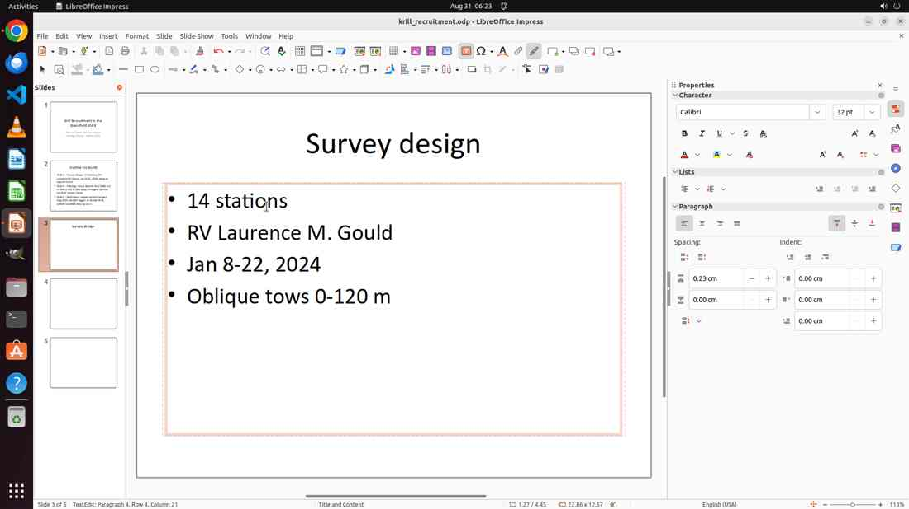
step 15 22:25:04
THINKINGSlide 3 is complete with the four bullets. Now let me move to slide 4. I'll click outside to deselect, then select slide 4. I'll double-click slide 4 thumbnail to open it, then add title and content.
Slide 4:
Title: "Findings"
Bullets:
- Larval density 412/1000 m³ vs 690 in 2023
- 38% drop
- Strongest decline north of Anvers Island
Note: the notes say "412/1000 m3". I'll use "m³" or "m3"? The original uses "m3". I'll keep "m3" to match the source, though m³ would be nicer. To be faithful, I'll write "m3". Actually using the superscript ³ is more correct for a deck. But to match the notes exactly, "m3" is safest. I'll use "m3".
Let me click outside first, then double-click slide 4.
ACTIONSlide 3 is complete. Now let me build slide 4. I'll click away to deselect, then open slide 4.
EXECUTED (pyautogui in VM)pyautogui.doubleClick(174, 642)
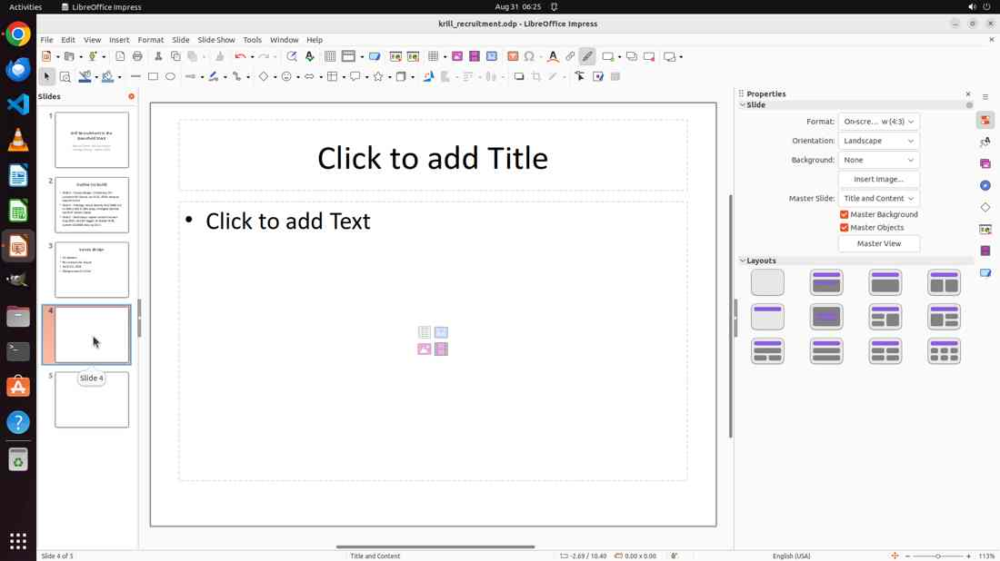
step 17 22:26:33
THINKINGSlide 4 is open with the same layout. Let me double-click the title, type "Findings", then double-click the content area and type the bullets. I can batch: double-click title, type title. Then I need a screenshot? No, the layout is predictable — same as slide 3. The content placeholder is at the same location. I'll batch the title typing, then double-click content, then type bullets.
Let me be careful: after typing title, I need to click into content area. I'll do this in one batch since coordinates are known.
ACTIONSlide 4 is open. Let me add the title "Findings" and the content bullets in one batch.
EXECUTED (pyautogui in VM)pyautogui.doubleClick(828, 302)
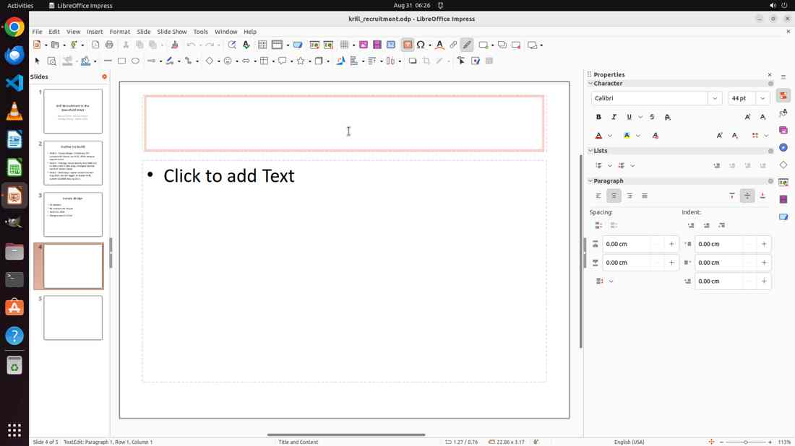
step 18 22:26:53
THINKINGI'm in the title edit mode for slide 4. Let me type "Findings", then double-click the content area and type the bullets. I'll batch these actions since the layout matches slide 3.
EXECUTED (pyautogui in VM)pyautogui.typewrite("Findings")
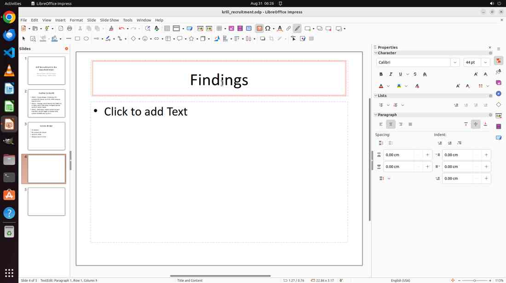
step 19 22:27:38
THINKINGTitle "Findings" is set. Now I'll click into the content area and type the three findings bullets. The notes say "larval density 412/1000 m3 vs 690 in 2023; 38% drop; strongest decline north of Anvers Island". I'll split into three bullets matching the notes.
ACTIONTitle set. Now let me add the findings bullets in the content area.
EXECUTED (pyautogui in VM)pyautogui.doubleClick(549, 423)
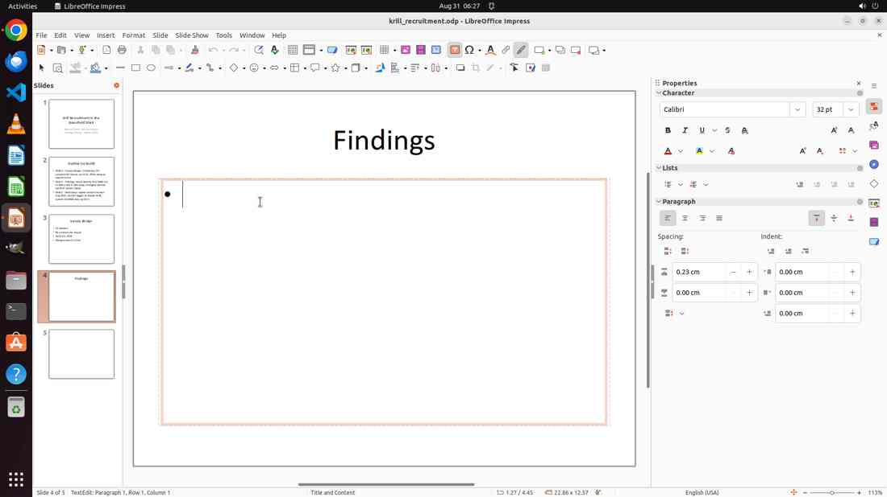
step 20 22:28:04
THINKINGI'm in content edit mode. Let me type the three findings bullets. I'll keep "m3" as in the notes.
TOOL CALL<tool_call>
<function=computer_use>
<parameter=action>
type
</parameter>
<parameter=text>
Larval density 412/1000 m3 vs 690 in 2023
38% drop
Strongest decline north of Anvers Island
</parameter>
</function>
</tool_call>
EXECUTED (pyautogui in VM)pyautogui.typewrite("Larval density 412/1000 m3 vs 690 in 2023\n38% drop\nStrongest decline north of Anvers Island")
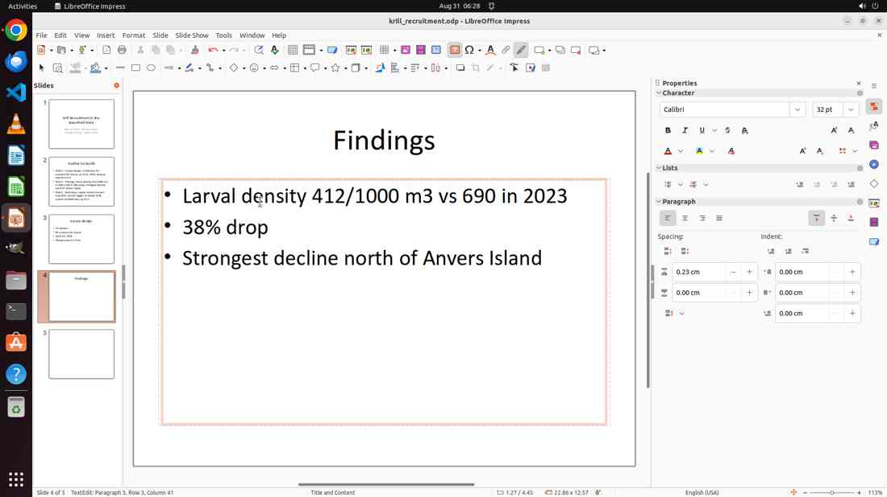
step 21 22:29:01
THINKINGSlide 4 is complete. Now let me build slide 5. I'll click away to deselect, then double-click slide 5 thumbnail.
Slide 5:
Title: "Next steps"
Bullets:
- Repeat winter transect Aug 2024
- Add pH logger at Station B-06
- Submit CCAMLR data by Oct 1
ACTIONSlide 4 is complete. Now let me build slide 5. I'll deselect and open slide 5.
EXECUTED (pyautogui in VM)pyautogui.doubleClick(174, 766)
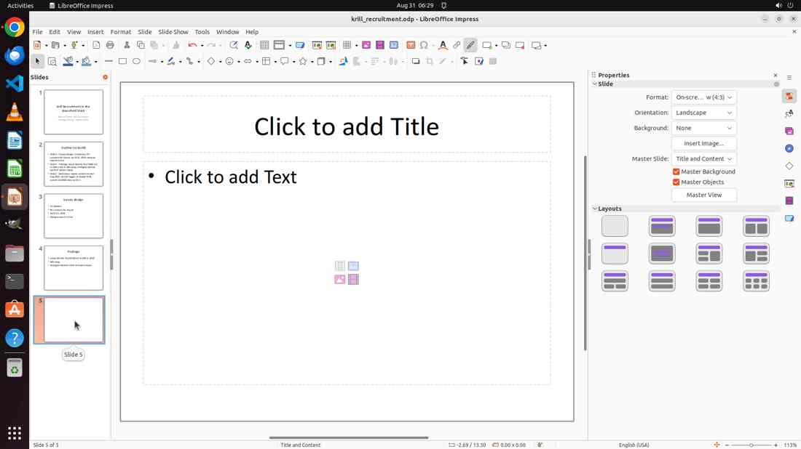
step 23 22:30:51
THINKINGSlide 5 is open. Let me add the title "Next steps" and the content. I'll double-click the title, type it, then double-click content and type bullets.
ACTIONSlide 5 is open. Let me add the title "Next steps".
EXECUTED (pyautogui in VM)pyautogui.doubleClick(549, 423)
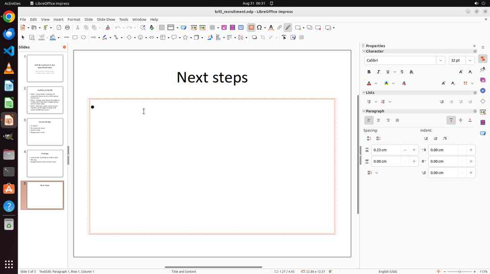
step 26 22:32:43
THINKINGIn content edit mode. Type the three next-steps bullets.
TOOL CALL<tool_call>
<function=computer_use>
<parameter=action>
type
</parameter>
<parameter=text>
Repeat winter transect Aug 2024
Add pH logger at Station B-06
Submit CCAMLR data by Oct 1
</parameter>
</function>
</tool_call>
EXECUTED (pyautogui in VM)pyautogui.typewrite("Repeat winter transect Aug 2024\nAdd pH logger at Station B-06\nSubmit CCAMLR data by Oct 1")
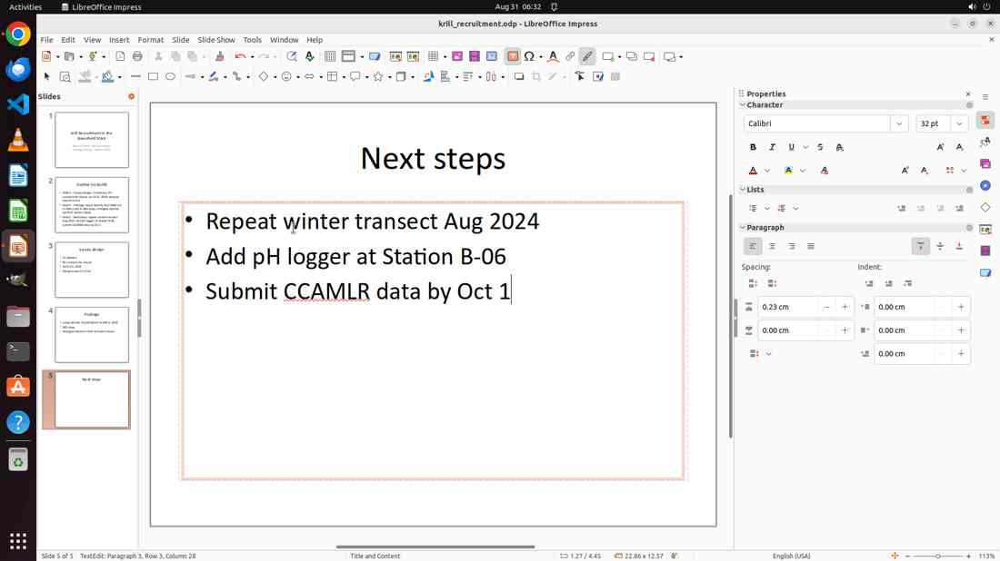
step 27 22:33:55
THINKINGSlides 3, 4, 5 are complete. Now I need to add a closing slide (slide 6) that cites the NOAA ocean acidification page.
I'll create a new slide. First click away to deselect. Then right-click on slide 5 in the panel and choose "New Slide", or use the Slide menu > New Slide. Actually the simplest is to click on slide 5 thumbnail then use the "New Slide" toolbar button, or press Ctrl+M which inserts a new slide after the current one.
Let me click on the slide 5 thumbnail first to ensure it's the active slide, then Ctrl+M. Then add title "References" / "Closing" and content with the citation.
What should the closing slide say? The task says "add a closing slide citing the NOAA ocean acidification page." So a title like "References" or "Source" and a bullet citing NOAA. Let me make it a proper closing slide. I'll title it "References" and include the citation. Or "Thank you / References". I'll use "References" as a clear closing citation slide.
Actually, a "closing slide" typically says "Thank you" or "Questions" plus references. To satisfy "citing the NOAA ocean acidification page," I'll include the full citation. I'll title it "References" and add the citation as content. This clearly closes the deck with the citation.
Let me click slide 5 thumbnail then Ctrl+M to add slide 6.
ACTIONAll three content slides are complete. Now I'll add the closing slide. Let me click slide 5's thumbnail and insert a new slide after it.
EXECUTED (pyautogui in VM)pyautogui.click(174, 766)
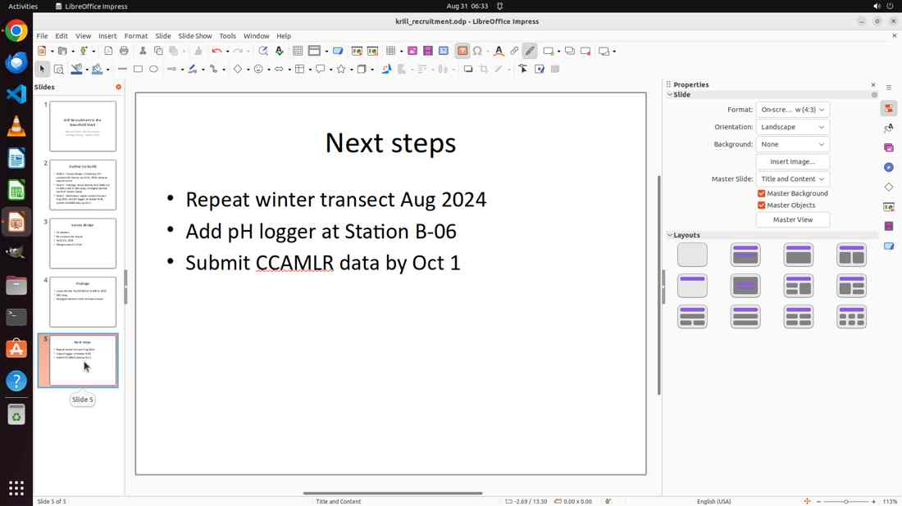
step 28 22:34:49
THINKINGSlide 5 is selected in the panel. Now I'll insert a new slide after it using Ctrl+M. This creates slide 6 with the same "Title and Content" layout.
ACTIONSlide 5 is selected. Let me insert a new slide after it with Ctrl+M.
EXECUTED (pyautogui in VM)pyautogui.hotkey("ctrl", "m")
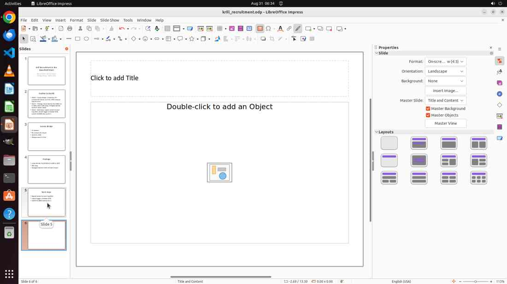
step 29 22:35:27
THINKINGSlide 6 was created, but it has a different layout — "Title, Content with Object" (Double-click to add an Object), not the text content layout. This layout has a content placeholder that's for an object, plus a text placeholder at the bottom maybe. Actually this layout is "Title and 2 Content" or "Content with Object". The main content area says "Double-click to add an Object".
For a closing slide citing a source, I'd prefer a "Title, Content" text layout. Let me change the layout. In the Properties panel, the Layouts section shows layout thumbnails. The second one in the first row (with title bar + content below) is "Title, Content". Let me select that layout to convert to a text content placeholder.
Looking at the layout grid: top row has 4 options. The first is blank, the second (at ~1052,362) appears to be "Title, Content" (title on top, content below). Let me click it.
Actually, I could just use the current layout: put the citation in the "Double-click to add an Object" content placeholder — but that's an object placeholder (image/chart), not text. Better to switch layout.
Let me click the second layout thumbnail in the top row to get "Title, Content".
ACTIONSlide 6 was created but with a "content object" layout. For a text citation, I'll switch it to the "Title, Content" layout from the Layouts panel.
EXECUTED (pyautogui in VM)pyautogui.click(1574, 542)
step 30 22:36:10
THINKINGNow the layout is "Title, Content" with "Click to add Title" and "Click to add Text". This is what I want. Now let me add the title and the citation.
Title: "References"
Content: The citation. I'll write it clearly:
"National Oceanic and Atmospheric Administration (NOAA). Ocean acidification. https://www.noaa.gov/education/resource-collections/ocean-coasts/ocean-acidification"
Let me add a "Thank you" closing note too? The task only requires citing the NOAA page. I'll keep it focused. I'll title it "References" and add the citation as one bullet. To make it a proper "closing slide," a title of "References" is fine and clearly closing.
Let me double-click the title placeholder and type "References".
ACTIONThe layout is now "Title, Content". Let me add the title "References".
EXECUTED (pyautogui in VM)pyautogui.doubleClick(828, 297)
step 31 22:36:54
THINKINGThe title text box is selected but not in edit mode (status bar says "Title text 'Click to...' selected"). The double-click landed but it shows the box selected with handles rather than a text cursor. Let me type - actually, if it's only selected (not in edit mode), typing might replace or not enter. Better to click into it again to enter edit mode. Let me double-click directly on the "Click to add Title" text to enter edit mode, then type.
Actually the status bar shows "Title text 'Click to...' selected" meaning the frame is selected, not editing. I need to enter edit mode. Let me double-click on the text area again.
ACTIONThe title box is selected but not in text-edit mode. Let me double-click into it to edit, then type.
EXECUTED (pyautogui in VM)pyautogui.typewrite("References")
step 33 22:37:38
THINKINGTitle "References" added. Now let me add the citation in the content area. I'll double-click on "Click to add Text" to enter edit mode, then type the NOAA citation.
ACTIONTitle set. Now let me add the NOAA citation in the content area.
EXECUTED (pyautogui in VM)pyautogui.doubleClick(828, 600)
step 34 22:38:25
THINKINGThe status bar shows "Text frame 'Click to...' selected" — it's selected but not yet in text edit mode (double-click registered as a select). I need to enter edit mode. Let me double-click again on the text placeholder to enter edit mode, then type.
Actually, when a placeholder frame is just selected, pressing F2 or Enter usually enters text edit mode. Or I can just start typing — in Impress, typing while a placeholder is selected often enters edit mode. To be safe, let me double-click once more directly on the "Click to add Text" text.
ACTIONThe content frame is selected but not in edit mode. Let me double-click into it to start editing, then type the citation.
EXECUTED (pyautogui in VM)pyautogui.doubleClick(828, 654)
step 35 22:39:45
THINKINGNow I'm in text edit mode (status bar: "TextEdit: Paragraph 1, Row 1, Column 1"). The text is center-aligned in this placeholder. For a citation, left alignment is more standard, but it's fine. Let me set alignment to left to be neat. Actually, I'll leave it — but a reference looks better left-aligned. Let me type the citation first.
I'll type the citation. To avoid LibreOffice auto-formatting the URL into a hyperlink awkwardly (it will, which is fine and actually good for a citation). The URL autolink is fine.
Let me type:
"National Oceanic and Atmospheric Administration (NOAA). Ocean acidification. https://www.noaa.gov/education/resource-collections/ocean-coasts/ocean-acidification"
I'll type it as a single line.
ACTIONI'm in edit mode now. Let me type the NOAA citation.
TOOL CALL<tool_call>
<function=computer_use>
<parameter=action>
type
</parameter>
<parameter=text>
National Oceanic and Atmospheric Administration (NOAA). Ocean acidification. https://www.noaa.gov/education/resource-collections/ocean-coasts/ocean-acidification
</parameter>
</function>
</tool_call>
EXECUTED (pyautogui in VM)pyautogui.typewrite("National Oceanic and Atmospheric Administration (NOAA). Ocean acidification. https://www.noaa.gov/education/resource-collections/ocean-coasts/ocean-acidification")
step 36 22:40:47
THINKINGThe citation is typed and the URL auto-formatted (it appears as plain text but was typed). The text is centered which is a bit unusual for a reference. The status bar shows "Row 6" because the text wrapped. The content is complete and correct.
The text is center-aligned. For a references slide, left alignment looks more professional. Let me select all the text in this box and left-align it. I'll press Escape to select the frame, then Ctrl+A within, or just select all text: click into the box, Ctrl+A, then left-align.
Actually, I'm already in edit mode. Let me select all text with Ctrl+A and apply left alignment (Ctrl+L).
ACTIONThe citation is in. Let me make it left-aligned for a cleaner references appearance. I'll select all the text and left-align it.
EXECUTED (pyautogui in VM)pyautogui.hotkey("ctrl", "a")
step 37 22:41:30
THINKINGAll text is selected. Now let me left-align it with Ctrl+L, then click outside to deselect. Then I'll save the file with Ctrl+S (keeping ODF format).
ACTIONAll text is selected. Let me left-align it and then click outside to deselect.
EXECUTED (pyautogui in VM)pyautogui.hotkey("ctrl", "l")
step 38 22:42:50
THINKINGThe citation is now left-aligned and looks clean. Now let me click outside to deselect, then save the file. I'll click on an empty area of the slide, then press Escape, then Ctrl+S. When saving as ODP, LibreOffice may prompt to keep format — I'll choose "Use ODF Format!" (Keep Current Format).
ACTIONThe references slide looks clean. Now let me deselect and save the file with Ctrl+S.
EXECUTED (pyautogui in VM)pyautogui.click(830, 1004)
step 39 22:43:26
THINKINGThe closing slide looks great. The URL appears to have been auto-hyperlinked (shown as plain text with red squiggle - actually it's just the citation text). Let me verify slides 3, 4, 5 are all correct by quickly reviewing thumbnails. They look populated in the thumbnails:
- Slide 3: "Survey design" with bullets
- Slide 4: "Findings" with bullets
- Slide 5: "Next steps" with bullets
- Slide 6: "References" with NOAA citation
Now let me save. Ctrl+S. A dialog may appear asking to keep ODF format. I'll press Enter or click "Use ODF Format!" to keep .odp.
ACTIONAll slides are built. Now let me save the file with Ctrl+S.